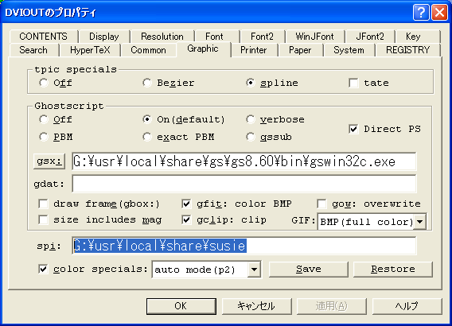

Last up date:
個人的作業メモ
（FreeBSDでの各種設定方法などを中心にした備忘録です。）
気になるキーワード：tcpdump
- 19inchラックのネジ間隔
19inchラックを固定するネジの横方向の間隔は465[mm]
19[inch]=482.6[mm]であるが、これは通常収納ラックの内寸となっているのでこの幅のケースは収納不可。収納可能なケースの幅はEIAの場合で450[mm]くらいまで。
参考
- Windows7からSambaにアクセスできない場合の対応方法
「ローカル セキュリティ ポリシー」→「ローカル ポリシー」→「ネットワーク セキュリティ: LAN Manager 認証レベル」→"NTLM 応答のみ送信する"を設定
- Agilent 54645Dの画面キャプチャソフトの不具合
新しいVer.3.70だと下図のように、垂直方向に線状のノイズが入る。Ver.3.1だと大丈夫。ただし、Ver.3.1はUIが悪い。
- Meadowで行番号を付けて印刷する方法
ak2prを利用。
.emacs に下記を追加。
(setq lpr-command
(expand-file-name (concat exec-directory
"../../ak2pr/bin/ak2pr.exe")))
(setq lpr-switches '())
(setq lpr-add-switches t)
(setq lpr-command-switches '())
（ak2pr.exeのパスは適時変更）
- FreeBSDのtcshのNLSのlocale(EUC)パス
4.X系
/usr/share/nls/ja_JP.EUC
5.X系 (4.6Rからはja_JP.EUCはシンボリックリンクとなったため、こっちが正解？)
/usr/share/nls/ja_JP.eucJP
- FreeBSDのバージョン情報表示
>uname -a
- XOOPS Ver.2.0.16a JP + PHP 4.4.X で新規投稿通知メールのSubjectなどが文字化けする場合の対策
/language/japanese/xoopsmailerlocal.php にパッチを充てる。
>patch xoopsmailerlocal.php < xoopsmailerlocal.php.patch
参考,
- SquirrelMail + Postfix における添付ファイル容量制限の設定
SquirrekMailでファイルを添付する際、そのファイルの容量制限はPHP(php.ini)の上限とApache(httpd.conf)の制限によるが、Postfixで運用している場合はPostfix(main.cf)での制限も合わせる必要がある。
容量制限を20MByteとしたい場合は下記の通り。
php.ini
upload_max_filesize = 20M
post_max_size = 20M
httpd.conf
LimitRequestBody 52428800
httpd.conf の制限は扱いたい上限よりも大きめにとる（phpの実行により多くの容量が必要なため）。上記は50MByte制限。
postfix の main.cf
mailbox_size_limit = 20971520
message_size_limit = 20971520
body_checks_size_limit = 20971520
| パラメータ | 意味 |
|---|
| mailbox_size_limit | 1受信メッセージあたりの最大容量（0で無制限） |
| message_size_limit | 1送信メッセージの最大容量 |
| body_checks_size_limit | 添付ファイルの最大容量 |
参考1
→ 移転先（推測）: http://kuro.crow2.net/tools/squirrelmail.htm 同じサイト内で /tools/ に移動（この回線からは接続不可）,
参考2.
- SquirrelMailのレスポンス向上
conf.pl(./configure) の設定項目中の「4. General Options」中の「11. Allow server-side sorting」を"true"に変更する。ディフォルトだとPHPでソートするようになっているようで、この変更をするとInboxのアクセスがとても速くなる。これでやっと普通のメーラ並みのレスポンスになった。
動作速度が遅い（重い）場合の原因には他に、内部でのDNSの逆引きなどに失敗していることなどがあるらしい。
参考1.
- SquirrelMailで、リプライするときの引用文の先頭に付く「On 日付 xxx wrote:」を英語に変更する方法
squirremail のインストールディレクトリにある /locale/ja_JP/LC_MESSAGES/squirrelmail.po の日付に関する部分を修正する。（修正後の squirrelmail.po）
修正後、squirrelmail.po をコンパイルする。
>cd po
>./compilepo ja_JP
コンパイル後、webサーバをリスタートする。
参考1.
- SquirrelMailでメールのSubjectが文字化けする場合の対策
Subjectに半角と全角が混じっていると文字化けすることがある。
これは、squirrelmailのインストール・ディレクトリ内の、/class/deliver/Deliver.class.php の 458行目を下記のように修正することで対応可能。
$header[] = 'Subject: '.encodeHeader($rfc822_header->subject) . $rn;
->
$header[] = 'Subject: '.mb_convert_encoding($rfc822_header->subject,"JIS") . $rn;
参考1.
- cronによる自動定期処理
/etc/crontab を編集
フォーマットは、
分 時 日 月 曜日 実行ユーザ コマンド
となっている。曜日に関しては日曜日から0〜7の数字(7も日曜日)、もしくは sun〜satで指定する。ワイルドカード * も使用可能。
ex.
分 時 日 月 曜日 実行ユーザ コマンド
0 6 * * * root /usr/local/etc/awstats/awstats.cron
とすると、毎日6:00にroot権限で/usr/local/etc/awstats.cron が実行される。
設定が終わったら、デーモンを再起動します。
>/etc/rc.d/cron restart
上記で再起動できますが、cronは1分毎に/etc/crontabをチェックし、再読み込みするので再起動の必要はない。
うまく動かない場合は、実行したいシェルの実行権が付いているか(755か)、シェルまでのパスがフルパスで記述されているかを確認。
参考1,
参考2,
参考3.
- .htaccessによる認証
- アクセス制限したいディレクトリに .htaccess を下記のような内容で作成。
AuthUserFile /home/username/.htpasswd
AuthGroupFile /dev/null
AuthName "Comment for Display."
AuthType Basic
require valid-user
- htpasswd -bc /home/username/.htpasswd USERNAME PASSWORD にて.htpasswd を作成。複数のアカウントを作る場合、二回目以降は -c オプションを付けない。
参考1,
参考2.
- AWStats 再び
AWStats 6.5 日本語版のインストール
- AWStatsをFreeBSDで動かすよりダウンロード。
- /usr/local/etc/awstats などを作成し、アーカイブを展開。
- docs内の解説を参考にインストール開始。
- toolsディレクトリ内のawstats_configure.plを実行して各種設定を行う。
- 設定ファイル awstats.www.xxx.conf の該当箇所を修正。修正箇所は、
- LogFile="/var/log/httpd-access.log"
- SiteDomain="www.xxx.com"
- DirData="/var/log/awstats"
など。
- データ出力用ディレクトリ /var/log/awstats を作成。
以上でインストールは完了。
>perl /usr/local/etc/awstats/wwwroot/cgi-bin/awstats.pl -update -config=コンフィグ名
で解析結果(Text形式)が出力される。（コンフィグ名は www.xxx.com など設定ファイル名の頭の awstats. をとったもの。）
さらにこれからhtml形式のレポートを作成するには、下記を実行する。
>perl /usr/local/etc/awstats/wwwroot/cgi-bin/awstats.pl -output -config=コンフィグ名 -staticlinks > 出力ファイル名
動作確認ができたら、さらに cron に追加しておくとよい。
下記、cron用スクリプト
#!/usr/bin/perl
system("/usr/local/etc/awstats/wwwroot/cgi-bin/utf8_decode.pl < /var/log/access_log > /var/log/access_log.utf8");
system("/usr/local/etc/awstats/wwwroot/cgi-bin/awstats.pl -config=www.xxx.com -update");
system("/usr/local/etc/awstats/wwwroot/cgi-bin/awstats.pl -config=www.xxx.com -output -staticlinks -month=all > /public_html/www.xxx.com/index.html");
system("/usr/local/etc/awstats/wwwroot/cgi-bin/awstats.pl -config=www.xxx.com -output=alldomains -staticlinks -month=all > /public_html/www.xxx.com/awstats.www.xxx.com.alldomains.html");
system("/usr/local/etc/awstats/wwwroot/cgi-bin/awstats.pl -config=www.xxx.com -output=allhosts -staticlinks -month=all > /public_html/www.xxx.com/awstats.www.xxx.com.allhosts.html");
system("/usr/local/etc/awstats/wwwroot/cgi-bin/awstats.pl -config=www.xxx.com -output=lasthosts -staticlinks -month=all > /public_html/www.xxx.com/awstats.www.xxx.com.lasthosts.html");
system("/usr/local/etc/awstats/wwwroot/cgi-bin/awstats.pl -config=www.xxx.com -output=unknownip -staticlinks -month=all > /public_html/www.xxx.com/awstats.www.xxx.com.unknownip.html");
system("/usr/local/etc/awstats/wwwroot/cgi-bin/awstats.pl -config=www.xxx.com -output=alllogins -staticlinks -month=all > /public_html/www.xxx.com/awstats.www.xxx.com.alllogins.html");
system("/usr/local/etc/awstats/wwwroot/cgi-bin/awstats.pl -config=www.xxx.com -output=lastlogins -staticlinks -month=all > /public_html/www.xxx.com/awstats.www.xxx.com.lastlogins.html");
system("/usr/local/etc/awstats/wwwroot/cgi-bin/awstats.pl -config=www.xxx.com -output=allrobots -staticlinks -month=all > /public_html/www.xxx.com/awstats.www.xxx.com.allrobots.html");
system("/usr/local/etc/awstats/wwwroot/cgi-bin/awstats.pl -config=www.xxx.com -output=lastrobots -staticlinks -month=all > /public_html/www.xxx.com/awstats.www.xxx.com.lastrobots.html");
system("/usr/local/etc/awstats/wwwroot/cgi-bin/awstats.pl -config=www.xxx.com -output=urldetail -staticlinks -month=all > /public_html/www.xxx.com/awstats.www.xxx.com.urldetail.html");
system("/usr/local/etc/awstats/wwwroot/cgi-bin/awstats.pl -config=www.xxx.com -output=urlentry -staticlinks -month=all > /public_html/www.xxx.com/awstats.www.xxx.com.urlentry.html");
system("/usr/local/etc/awstats/wwwroot/cgi-bin/awstats.pl -config=www.xxx.com -output=urlexit -staticlinks -month=all > /public_html/www.xxx.com/awstats.www.xxx.com.urlexit.html");
system("/usr/local/etc/awstats/wwwroot/cgi-bin/awstats.pl -config=www.xxx.com -output=browserdetail -staticlinks -month=all > /public_html/www.xxx.com/awstats.www.xxx.com.browserdetail.html");
system("/usr/local/etc/awstats/wwwroot/cgi-bin/awstats.pl -config=www.xxx.com -output=osdetail -staticlinks -month=all > /public_html/www.xxx.com/awstats.www.xxx.com.osdetail.html");
system("/usr/local/etc/awstats/wwwroot/cgi-bin/awstats.pl -config=www.xxx.com -output=unknownbrowser -staticlinks -month=all > /public_html/www.xxx.com/awstats.www.xxx.com.unknownbrowser.html");
system("/usr/local/etc/awstats/wwwroot/cgi-bin/awstats.pl -config=www.xxx.com -output=unknownos -staticlinks -month=all > /public_html/www.xxx.com/awstats.www.xxx.com.unknownos.html");
system("/usr/local/etc/awstats/wwwroot/cgi-bin/awstats.pl -config=www.xxx.com -output=refererse -staticlinks -month=all > /public_html/www.xxx.com/awstats.www.xxx.com.refererse.html");
system("/usr/local/etc/awstats/wwwroot/cgi-bin/awstats.pl -config=www.xxx.com -output=refererpages -staticlinks -month=all > /public_html/www.xxx.com/awstats.www.xxx.com.refererpages.html");
system("/usr/local/etc/awstats/wwwroot/cgi-bin/awstats.pl -config=www.xxx.com -output=keyphrases -staticlinks -month=all > /public_html/www.xxx.com/awstats.www.xxx.com.keyphrases.html");
system("/usr/local/etc/awstats/wwwroot/cgi-bin/awstats.pl -config=www.xxx.com -output=keywords -staticlinks -month=all > /public_html/www.xxx.com/awstats.www.xxx.com.keywords.html");
system("/usr/local/etc/awstats/wwwroot/cgi-bin/awstats.pl -config=www.xxx.com -output=errors404 -staticlinks -month=all > /public_html/www.xxx.com/awstats.www.xxx.com.errors404.html");
参考1,
参考2.
- スタイルシートでテーブルを中央揃えする方法
table.center{margin-left: auto; margin-right: auto} とする。
参考1.
- SquirrelMailである日突然「送信」ボタンを押しても画面が更新されなくなったり、返信や転送ができなくなる原因
メールボックスに入っているメールの総数が多くなると、PHPのメモリ容量制限で読めなくなっているぽい。
Apacheのエラーログに Allowed memory size of 8388608 bytes exhausted と出ている。
対策：php.ini中の memory_limit = 8M の値を増やす。
参考1,
参考2.
- Mysqlのコマンドラインからのでのデータベース操作方法
データベース作成: >mysqladmin -u アカウント名 -p create データベース名
データベース削除: >mysqladmin -u アカウント名 -p drop データベース名
- Mysqlのコマンドラインからのでのデータベースバックアップ方法
データベースバックアップ: >mysqldump -u ユーザ名 -p -q データベース名 > 出力ファイル名
データベースリストア: >mysql -u ユーザ名 -p リストア先データベース名 < 入力ファイル名
参考1,
参考2.
- XOOPSの移転
1. MySQLデータベースのバックアップ
2. 移転先MySQLデータベースの作成
3. 移転先データベースへのコピー
4. XOOPSファイルのコピー
5. mainfile.phpの編集
6. cache, templates_c にあるファイルの削除
7. cache, templates_c, upload のパーミッションを 777 に変更
mainfile.php中の
define('XOOPS_ROOT_PATH', '/home/XXX/public_html（フルパス、末尾スラッシュなし）');
define('XOOPS_URL', 'サイトのURL（末尾スラッシュなし）');
define('XOOPS_DB_USER', '新規MySQLアカウント名');
define('XOOPS_DB_NAME', '新規MySQLデータベース名');
- sendmailでの特定ホストからの受信拒否設定方法
/etc/sendmail.spamlist に受信拒否したいホストを記述
ホスト名 discard （相手に何も返信しない場合）
ホスト名 any comment （相手にエラーメッセージを返す場合）
>makemap hash /etc/sendmail.spamlist.db < ./sendmail.spamlist
でsendmail.spamlist.dbを更新して再起動。
参考
- OpenSSHのssh-keygenによるDSA鍵ペアの生成方法
>ssh-keygen -t dsa -b ビット長
秘密鍵の名前は id_dsa とする。
※putty-keygenで生成した公開鍵とまとめて authorized_keys を作る場合、
putty-keygenで生成した公開鍵は末尾につけないとうまくくっつかないことがある。
- sendmail, postfix などにおける .forward の書き方
Maildir形式のばやい
~/Maildir/
転送先のアドレス1
転送先のアドレス2
mbox形式のばやい
\アカウント名
転送先のアドレス1
転送先のアドレス2
とする。
- IE対応のマルチアイコン・タイプのfavicon.icoの作成方法
1. 16x16 と 32x32 pixel の画像を作成。
2. @icon変換 (Windows用ソフト)でfavicon.icoを作成。
3. index.htmlのヘッダ中に、<link rel="shortcut icon" href="favicon.ico"> を追加。
参考1
- PHP 4.4.0 の文字化け対応パッチ
SquirrelMail 1.4.5でSubjectが日本語のメールを出すと、Subjectが文字化けする原因。
対策：PHP 4.3.11 にバージョンダウンするか、下記の通りパッチを当てる（パッチをfilesに入れて再コンパイルする）。
>cd /usr/ports/converters/php4-mbstring
>mkdir files
>cd files
>fetch patch-ext__mbstring__libmbfl__mbfl__mbfilter.c
>cd ../
>make clean
>make
>make deinstall
>make install
参考1,
参考2,
参考3
リンク切れ用(ローカル)
参考1,
参考2,
参考3
- SquirrelMail 1.4.5の設定(内部だけどSSL化)
>cd /usr/local/www/squirrelmail/config
>./conf.pl
Main Menu の 2.Server Settings で、A.Update IMAP Settings を選択し、
5.IMAP Port を 993 に、7.Secure IMAP (TLS) を true に変更。
また、8.Server software は使用するimapにあわせて uw or courierにする。
Courier-IMAPの場合はさらに下記の設定が必要!
3.Folder Defaults の
1.Default Folder Prefix を none に、
3.Trash Folder を Inbox.Trash に、
4. Sent Folder を Inbox.Sent に、
5. Drafts Folder を Inbox.Drafts に変更。
- SquirrelMail向けCourier-IMAPの設定(内部だけどSSL化)
UW-IMAPはmbox形式なので、Maildir形式のCourier-IMAPに変更。
>cd /usr/local/etc/courier-imap
>cp cp imapd.cnf.dist imapd.cnf
imapd.cnfの下記該当部分を編集。
[ req_dn ]
C=JP
ST=None
L=None
O=ms.susutawari.org
OU=Automatically-generated IMAP SSL key
CN=susutawari.org
emailAddress=susu@susutawari.org
>/usr/local/share/courier-imap/mkimapdcert を実行するとkeyができる。
（/usr/local/share/courier-imap/imapd.pem）
/usr/local/etc/courier-imap/imapd-ssl の下記該当部分を編集。
SSLADDRESS=127.0.0.1
IMAPDSSLSTART=YES
IMAPDSTARTTLS=NO
IMAP_TLS_REQUIRED=1
(TLS_CERTFILE=/usr/local/share/courier-imap/imapd.pem)
Courier-IMAPはinetdから起動されるわけではないので、imapsをコメントアウト。
/etc/rc.conf の inetd_enable="YES" をはずし、代わりに
courier_authdaemond_enable="YES"と、
courier_imap_imapd_ssl_enable="YES" を追加。
また、postfixの設定(main.cf)で、home_mailbox = Maildir/ を設定する必要あり。
なお、各ユーザーのMaildirは最初にメールを受信したときに作られるが、maildirmakeコマンドでも生成可能。
参考1
→ 移転先（推測）: https://www.scl.sds.hit-u.ac.jp/ 作者 小町守氏の現在のサイト。記事自体は現存しない,
参考2,
参考3
- SquirrelMail向けUW-IMAPの設定(内部だけどSSL化)
※FreeBSD 5.X系はディフォルトでinetdが起動していないのでimapdも起動しない。
portsから WITH_SSL_AND_PLAINTEXT=yes オプションをつけて cclient と imap-uw をインストール。
>cd /usr/ports/mail/cclient
>make WITH_SSL_AND_PLAINTEXT=yes install
>cd /usr/ports/mail/imap-uw
>make WITH_SSL_AND_PLAINTEXT=yes install
/etc/inetd.conf に下記を追加。
imaps stream tcp nowait root /usr/local/libexec/imapd imapd
/etc/hosts.allow に下記を追加。
imapsd : localhost : allow
imapsd : ALL : deny
/etc/rc.conf に下記を追加。
inetd_enable="YES"
参考1,
参考2
- Apache21でのSSL設定
/etc/rc.conf 中に apache21ssl_enable="YES"を追加
>cd /usr/local/etc/apache21
>mkdir ssl.key ssl.crt
>chmod 700 ssl.key ssl.crt
>openssl genrsa -out /usr/local/etc/apache21/ssl.key/server.key 1024
>openssl req -new -days 365 -key /usr/local/etc/apache21/ssl.key/server.key -out /usr/local/etc/apache21/ssl.crt/server.csr
>openssl x509 -in /usr/local/etc/apache21/ssl.crt/server.csr -out /usr/local/etc/apache21/ssl.crt/server.crt -req -signkey /usr/local/etc/apache21/ssl.key/server.key -days 365
>chmod 400 ssl.key/* ssl.crt/*
/usr/local/etc/apache21/ssl.confを編集。
# General setup for the virtual host
DocumentRoot "/usr/local/www/data"
ServerName www.example.com:443
ServerAdmin you@example.com
ErrorLog /var/log/httpd-error.log
TransferLog /var/log/httpd-access.log
ファイル中で 上記 ServerNameとServerAdminを書き換える。
参考1
- 瞬電とかでWindowsが落ちた後、下記のメッセージが出て起動しなくなる。
次のファイルが存在しないかまたは壊れているため、Windows を
起動できませんでした:
\system32\hal.dll.
上記のファイルをインストールしてください。
解決方法：修復インストール
- FreeBSD4.6.2Rでのftpクライアントの設定
ディフォルトだと /etc/login.conf 中で、FTP_PASSIVE_MODE=YES と設定され
ているが、これだと外部にftpで接続した際、サーバによっては ls, get などが使えない。
このため、.cshrcなどでunsetenv FTP_PASSIVE_MODE とする。
※ちなみにportsはftpクライアントを使うので、この設定ができていないと
makeで外部のftpサーバに取りに行けない。
ルータのせい？cvsupが使うport(5999)があいていない？
- cvsupによるportsの自動更新
>cd /usr/ports/net/cvsup
>make install
>cp /usr/share/examples/cvsup/ports-supfile /usr/local/etc
コピーしたsupfileを編集。
ファイル中で *default host=cvsup.jp.FreeBSD.org に書き換える。
>rehash
>cvsup -g -L 2 /usr/local/etc/ports-supfile
にて更新開始。
参考1
で、cvsup自体をportsで更新
>cd /usr/ports/net/cvsup
>make
>cvsup -v (現在インストールされているバージョンを確認)
>make deinstall
>make reinstall
>cvsup -v (新しいバージョンが入ったか確認)
- XOOPS向けのPHP4.3.11の導入
>cd /usr/ports/www/mod_php4
>make install
>cp /usr/local/etc/php.ini-dist /usr/local/etc/php.ini
/usr/local/etc/php.ini に修正
output_handler = mb_output_handler
register_globals = On
mbstring.language = Japanese
mbstring.internal_encoding = EUC-JP
mbstring.http_input = auto
mbstring.http_output = EUC-JP
mbstring.substitute_character = none;
mbstring.func_overload = 0
php4-extensions のインストール
>cd /usr/ports/lang/php4-extensions
>make (PCRE(Perl Compatible Regular Expressions)が選択されているか確認)
>make install
※PCREが入っていないと"Fatal error: Call to undefined function:
preg_match() in /XXX/install/index.php on line 1254"と言われたり、XOOPSのインストール中でのDBチェック画面が真っ白になったりする。
参考1
Apache2の設定ファイル /usr/local/etc/apache2/httpd.conf を修正
DirectoryIndex に index.php を追加。
AddType application/x-httpd-php .php
AddType application/x-httpd-php-source .phps
LoadModule php4_module libexec/apache/libphp4.so
をそれぞれ追加。
参考2
- XOOPS向けのMySQL4.0.24の導入
4.0.25だと何故かうまくいかなかった（XOOPSのインストール中でのDBチェック画面が真っ白になる:PCREがうまく入らなかった？）ので、3.23.59に変更。
>cd /usr/ports/databases/mysql40-server
>make WITH_APACHE2=yes WITH_CHARSET=ujis WITH_XCHARSET=all
>make install
参考1
インストール後の設定
>cd /usr/local/bin
>./mysql_install_db --user=mysql (データベースの作成)
mysqlの起動
>cd /usr/local/etc/rc.d
mysql-server.shに修正(: ${mysql_enable="YES"}にするだけ)
/etc/rc.conf に mysql_enable="YES" を追加。
>./mysql-server.sh start
>mysqladmin -u root password XXX
>mysql -u root -p
mysql>GRANT ALL PRIVILEGES ON *.* TO hoge@localhost IDENTIFIED BY 'XXXX' WITH GRANT OPTION; (hogeというアカウントの作成とXXXXというパスワードの設定)
>mysql -u hoge -p (hogeでログイン)
mysql>CREATE DATABASE hogehoge; (hogehogeデーターベースの作成)
参考
- XOOPS 2.0.9.2 の導入
>~/public_html/ に html/ のファイルを展開。
パーミッションの変更
>chmod 707 uploads/ cache/ templates_c/
>chmod 606 mainfile.php
Webブラウザから ~/ もしくは ~/install にアクセス
- XOOPSのSSLログインの設定
1. アーカイブ展開ディレクトリにあるログイン用PHPファイル
xoops-2.0.9.2-ja-eucjp/extras/login.php の5行目を修正。
2. $path = '/home/susu/public_html/'; などxoopsファイルのあるディレクトリ
を指定。
3. 修正したlogin.php を /home/susu/public_html/ にコピー。
4. xoopsの管理メニューの一般設定で、「SSLログインページへのURL」にlogin.phpをフルパスで指定。
- dvipdfm で PDF を作るときに付けるべき？オプション
>dvipdfm -p a4 -x 20.4mm -y 20.4mm -z 0 -r 600 -e -c -V 4 XXX.dvi
| Option | Mean |
|---|
| -p a4 | paper size を A4 にする（デフォルト） |
| -x 20.4mm | 紙の左端からのマージンを20.4mmにする |
| -y 20.4mm | 紙の上端からのマージンを20.4mmにする |
| -z 0 | 埋め込み画像の圧縮をしない設定？ |
| -r 600 | 解像度を600dpiにする（デフォルト） |
| -e | 部分フォント？を埋め込まなくする |
| -c | 白黒出力にする |
| -V 4 | PDF Version 1.4 にする |
オプションを指定しない（デフォルト）でPDFを作ると、マージンが大きすぎるような気
がするので、上記のような指定をした方がいいと思います。でも、CorelDRAWで出力したepsを埋め込んだPDFを作ると、画面で見たときに消えることがあるのが未解決・・まあ、再描画すれば見えるのだけど。
- dviout (for Windows)でeps/bmp以外の画像を表示する方法

Option -> Setup Parameters -> Graphic 中の、spi: に Susieプラグインのあるパスを設定する。
設定ができたら「Save」を忘れずに。
また、GIF:の設定を「BMP(full color)」としておくと、BMPがカラー表示される。
参考
- bbファイルを一括作成する方法
dviout付属のcreatebbコマンドを使う。
"Browse..."で変換元の画像ファイルのあるディレクトリを指定して、"Create BB file"で一括作成可能。
- Windows版のTeX環境 (W32TeX)で、BMP画像ファイルを埋め込んでPDFを作成する方法
\usepackage[dvipdfmx]{graphicx,color}
- Windows版のTeX環境 (W32TeX)で、eps形式以外の画像ファイルを埋め込む場合の追加設定
- dvioutをインストールしたディレクトリ以下の"\GRAPHIC\LATEX2E\dviout.def"をTeXをインストールしたディレクトリ以下"\tex\latex\graphics"にコピーする。
- TeXをインストールしたディレクトリ以下"\tex\latex\misc"に 井上氏のmediabb.sty
→ 移転先（推測）: https://www.ma.ns.tcu.ac.jp/Pages/TeX/mediabb.sty.html 東京都市大の同名パス（今はサーバーが 500 を返す） を追加。
以上により、本文中で
\usepackage[dviout]{graphicx,color}
%\usepackage[dvipdfm]{graphicx,color} pdf化する場合はこっち
\usepackage{mediabb}
\includegraphics{imagefile}
として、-shell-escape オプションを付けてコンパイルすることで、
bbファイルが自動生成され、eps/pdf の使い分けが容易に行える。
参考1,
参考2,
参考3,
参考4